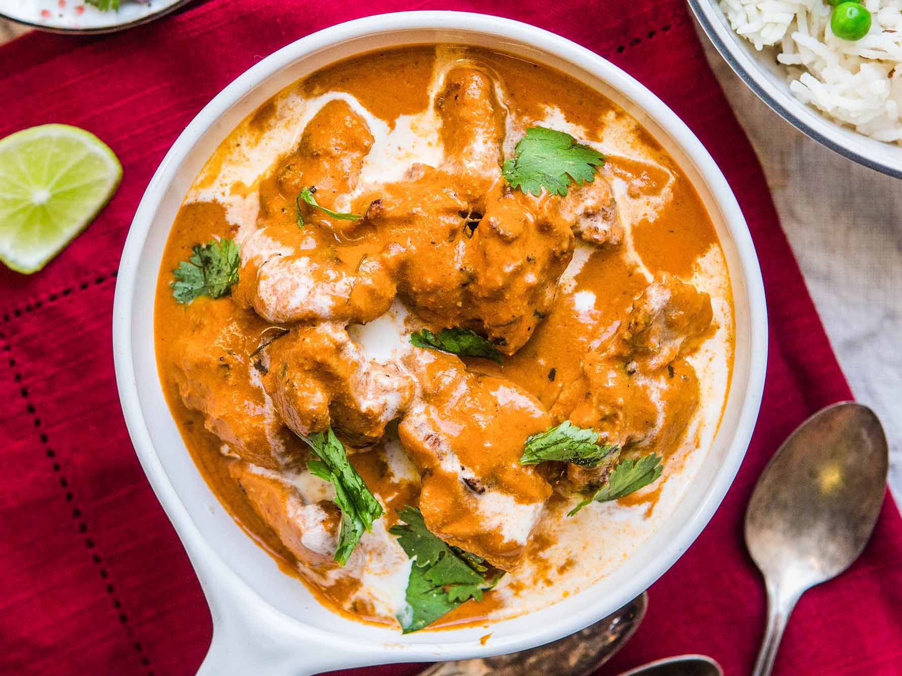

Butter Chicken

A flavourful and tasty butter chicken dish which is generally served with naan bread!
Generally, this dish is very popular in India (where it originates from), and is one of the staple
dishes found in India.
Fun Fact! It can be generally sweet or spicy depending on the recipe method used
Ingredients
- 1/2 cup Greek-style yoghurt
- 2 garlic cloves, crushed
- 3cm piece ginger, peeled, finely grated
- 2 tsp ground cumin
- 2 tsp ground coriander
- 1 tsp garam masala
- 1/4 tsp chilli powder
- 600g Lilydale Free Range Chicken Thigh, cut into 3cm pieces
- 1 tbsp vegetable oil
- 20g butter
- 1 brown onion, halved, thickly sliced
- 410g can tomato puree
- 1/2 cup Massel chicken style liquid stock
- 1/2 cup thickened cream
- Basmati rice, to serve
- Coriander leaves, to serve
Steps
- Place yoghurt , garlic , ginger , cumin , coriander , garam masala and chilli
powder in a glass or ceramic dish. Add chicken . Stir to coat. Cover.
Refrigerate for 2 hours.
- Heat oil and butter in a heavy-based saucepan over medium-high heat. Add onion.
Cook, stirring occasionally, for 3 to 4 minutes or until softened. Add chicken
mixture to pan. Cook, stirring, for 5 minutes or until chicken just starts to
change colour. Add tomato puree and stock . Cover. Bring to the boil. Reduce heat to
low. Simmer, stirring occasionally, for 10 minutes or until chicken is tender and
mixture has thickened slightly.
- Stir in cream. Simmer for a further 5 minutes or until heated through.
Serve with steamed rice and coriander leaves .